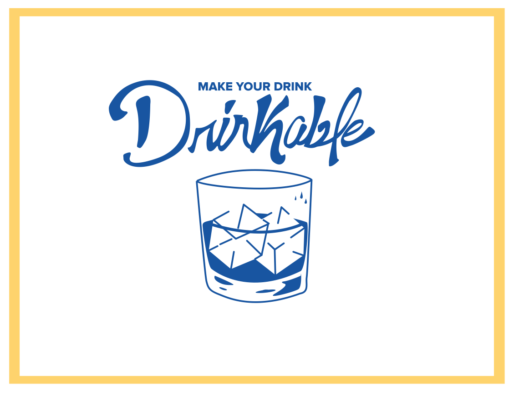

ABOUT THE APP
There are thousand of drinking apps that teach you in less than a minute how to make the best drinks, but there is always a problem : I don’t have that in my pantry. Drinkable is a fun way to learn how to mix drinks with things that you already have at home. With beautiful visuals and little steps , you can choose a drink that you can make with all those ingredients in your home. Because we all love options, we also have suggestions of ingredients to buy to make more drinks, and we give you the opportunity to text the ingredients to someone joining your party, that way you don’t have to leave your other drinks ( and friends) alone.